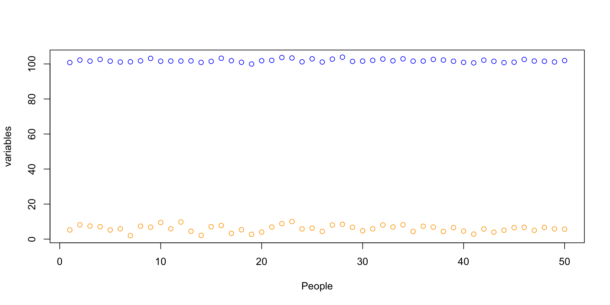
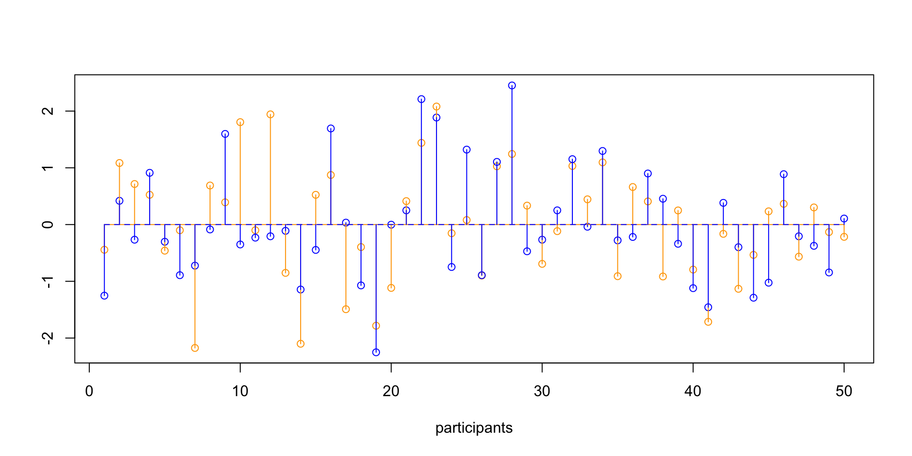
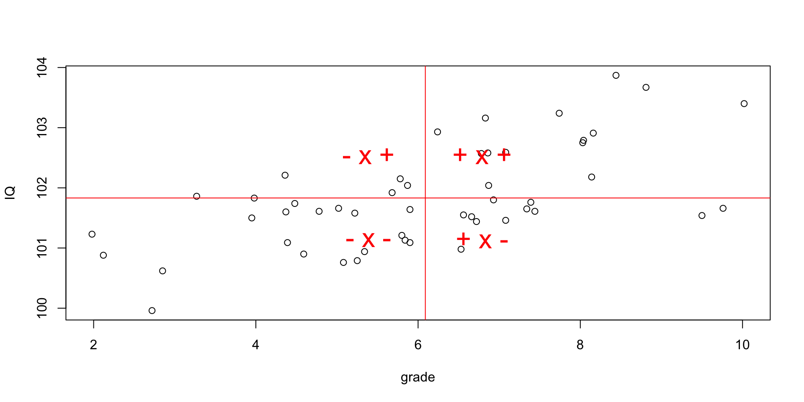
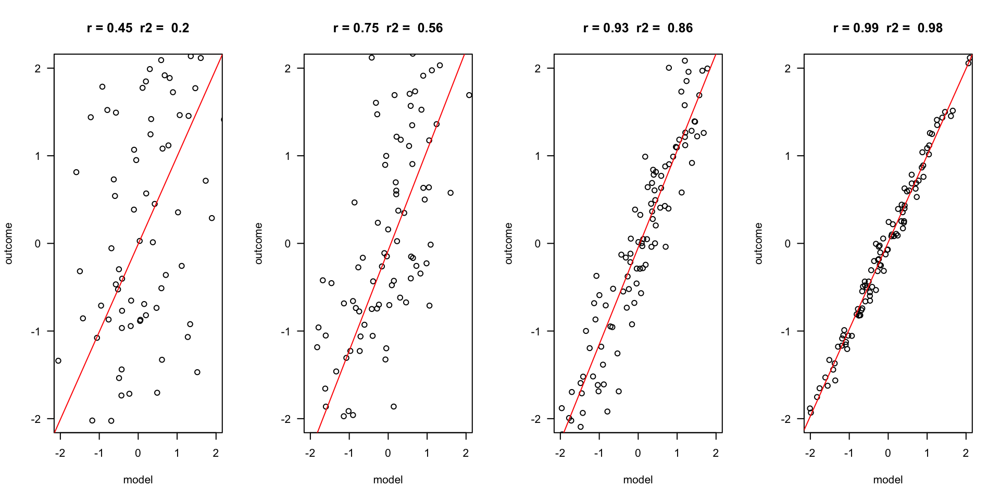
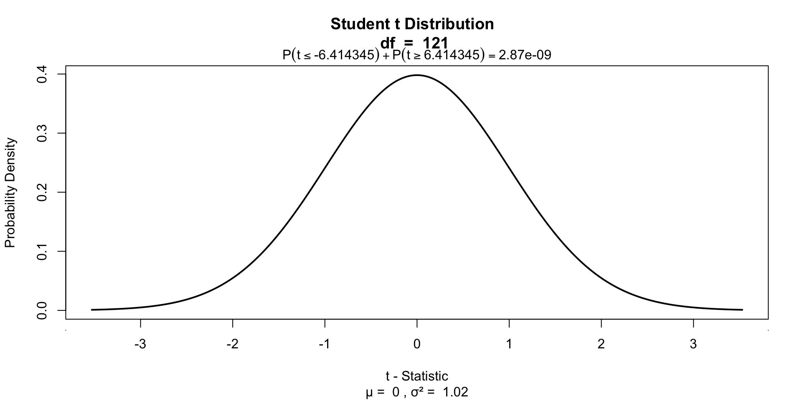
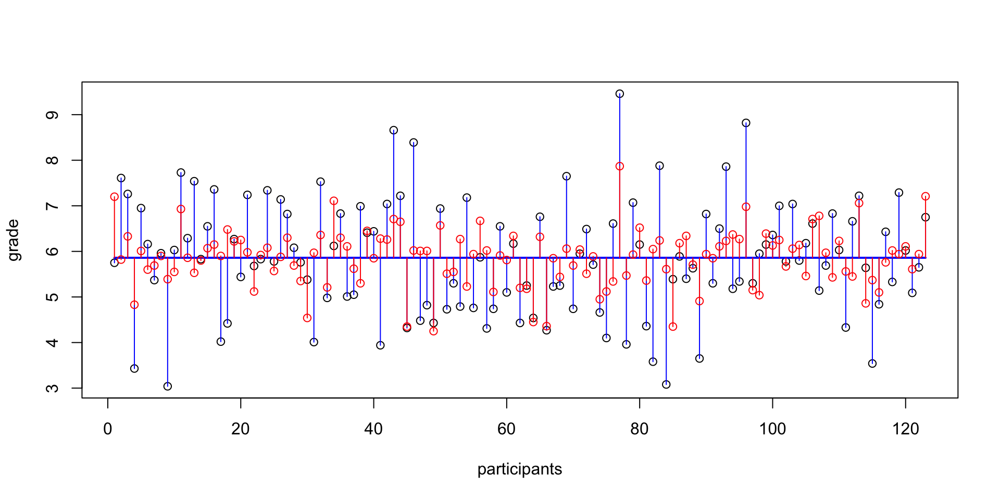
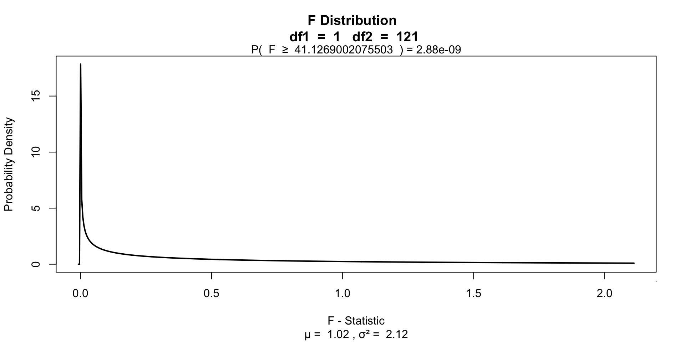

Correlation and Simple regression
Klinkenberg
University of Amsterdam
3 nov 2022
Correlation
Pearson Correlation

In statistics, the Pearson correlation coefficient, also referred to as the Pearson’s r, Pearson product-moment correlation coefficient (PPMCC) or bivariate correlation, is a measure of the linear correlation between two variables X and Y. It has a value between +1 and −1, where 1 is total positive linear correlation, 0 is no linear correlation, and −1 is total negative linear correlation. It is widely used in the sciences. It was developed by Karl Pearson from a related idea introduced by Francis Galton in the 1880s.
Source: Wikipedia
PMCC
\[r_{xy} = \frac{{COV}_{xy}}{S_xS_y}\] Where \(S\) is sthe standard deviation and \(COV\) is the covariance.
\[{COV}_{xy} = \frac{\sum_{i=1}^N (x_i - \bar{x})(y_i - \bar{y})}{N-1}\]
Plot correlation

\[(x_i - \bar{x})(y_i - \bar{y})\]
Guess the correlation


Simulate data
Explaining vairance
Standarize
\[z = \frac{x_i - \bar{x}}{{sd}_x}\]
data[, c('z.grade', 'z.IQ')] = scale(data[, c('grade', 'IQ')])
z.grade = data$z.grade
z.IQ = data$z.IQ
mean.z.grade = mean(z.grade, na.rm=T)
mean.z.IQ = mean(z.IQ, na.rm=T)
plot(z.grade,
ylim = summary(c(z.grade, z.IQ))[c('Min.','Max.')],
col = 'orange',
ylab = "", xlab="participants")
points(z.IQ, col='blue')
# Add mean lines
lines(rep(mean.z.grade, N), col='orange')
lines(rep(mean.z.IQ, N), col='blue', lt=2)
# Add vertical variance lines
segments(1:N, mean.z.grade, 1:N, z.grade, col='orange')
segments(1:N, mean.z.IQ, 1:N, z.IQ, col='blue')Standarize

Covariance
\[{COV}_{xy} = \frac{\sum_{i=1}^N (x_i - \bar{x})(y_i - \bar{y})}{N-1}\]
Correlation
\[r_{xy} = \frac{{COV}_{xy}}{S_xS_y}\]
Plot correlation
Significance of a correlation
\[t_r = \frac{r \sqrt{N-2}}{\sqrt{1 - r^2}} \\ {df} = N - 2\]
\[ \begin{aligned} H_0 &: t_r = 0 \\ H_A &: t_r \neq 0 \\ H_A &: t_r > 0 \\ H_A &: t_r < 0 \\ \end{aligned} \]
r to t
Visualize
One-sample t-test
Visualize
Partial correlation
Venn diagram
Partial correlation
\[\LARGE{r_{xy \cdot z} = \frac{r_{xy} - r_{xz} r_{yz}}{\sqrt{(1 - r_{xz}^2)(1 - r_{yz}^2)}}}\]
Significance of parial correlation
One-sample t-test
Significance of parial correlation
Regression
(one predictor)
Regression
\[\LARGE{\text{outcome} = \text{model} + \text{error}}\]
In statistics, linear regression is a linear approach for modeling the relationship between a scalar dependent variable y and one or more explanatory variables denoted X. The case of one explanatory variable is called simple linear regression.
\[\LARGE{Y_i = \beta_0 + \beta_1 X_i + \epsilon_i}\]
In linear regression, the relationships are modeled using linear predictor functions whose unknown model parameters are estimated from the data.
Source: wikipedia
Outcome vs Model
Assumptions
A selection from Field:
- Sensitivity
- Homoscedasticity
Sensitivity
Outliers
- Extreme residuals
- Cook’s distance (< 1)
- Mahalonobis (< 11 at N = 30)
- Laverage (The average leverage value is defined as (k + 1)/n)

Homoscedasticity
- Variance of residual should be equal across all expected values
- Look at scatterplot of standardized: expected values \(\times\) residuals. Roughly round shape is needed.

Simulation
The data
Calculate regression parameters
\[{grade}_i = b_0 + b_1 {IQ}_i + \epsilon_i\]
Calculate \(b_1\)
\[b_1 = r_{xy} \frac{s_y}{s_x}\]
Calculate \(b_0\)
\[b_0 = \bar{y} - b_1 \bar{x}\]
The slope


Calculate t-values for b’s
\[t_{n-p-1} = \frac{b - \mu_b}{{SE}_b}\]
Where \(n\) is the number of rows, \(p\) is the number of predictors, \(b\) is the beta coefficient and \({SE}_b\) its standard error.
P-values of \(b_0\)
\[\begin{aligned} t_{n-p-1} &= \frac{b - \mu_b}{{SE}_b} \\ df &= n - p - 1 \\ \end{aligned}\]
Where \(b\) is het beta coeficient \({SE}\) is the standard error of the beta coefficient, \(n\) is the number of subjects and \(p\) the number of predictors.
P-values of \(b_0\)

P-values of \(b_1\)
Define regression equation
\[\widehat{grade} = {model} = b_0 + b_1 {IQ}\]
So now we can add the expected grade based on this model
Expected values
Let’s have a look
\(y\) vs \(\hat{y}\)
And lets have a look at this relation between expectation and reality

Error
The error / residual is the difference between the model expectation and reality
Model fit
The fit of the model is the amount of error, which can be viewed in the correlation (\(r\)).
Explained variance
Explained variance visually
The part that does not overlap is therefore ‘unexplained’ variance. And because \(r^2\) is the explained variance, \(1 - r^2\) is the unexplained variance.
Test model fit
Compare model to mean Y (grade) as model
\[F = \frac{(n-p-1) r^2}{p (1-r^2)}\]
Where \({df}_{model} = n - p - 1 = N - K - 1\).
Signal to noise
Given the description of explained variance, F can again be seen as a proportion of explained to unexplained variance. Also known as a signal to noise ratio.
Visualize
End
Contact


Scientific & Statistical Reasoning